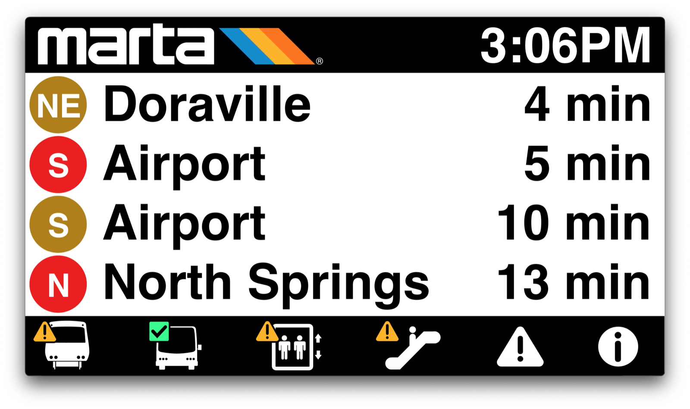
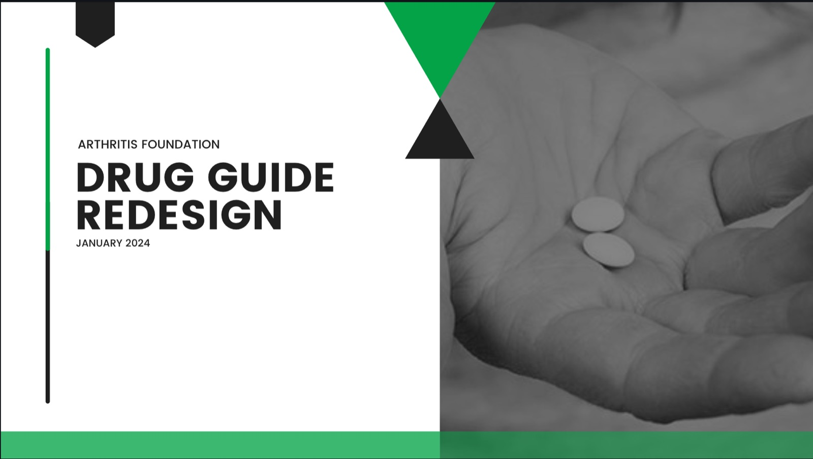

Path 02 / Interactive & Digital Design
The Architect
Designing how people interact with products, places & stories — screens, kiosks & exhibits that feel obvious the moment you touch them. Ten years of making complicated things feel simple.
The proof
02 — Full case studies inside
01
Ripley’s Believe It or Not!
2026 — A discovery kiosk and mobile companion for an attraction you may know. I can’t show it here yet (In progress — hush hush), but I can tell you about it IRL!
02
Amex Travel
Razorfish · 2022–23 — New vacation-rental booking for Amex Travel’s points platform, integrated cleanly for 54M U.S. cardmembers.
03
MARTA Transit
Rebel & Reason · 2020–21 — A new digital-signage system now live on 326 screens across all 38 MARTA stations.

04 Arthritis Foundation Arthritis Foundation · 2024 — Two-phase research (survey → video interviews) shaping an interactive drug guide for Arthritis.org.
05 Mastercard Mastercard × Razorfish · 2022–23 — Touchcard: secure, independent payment for blind & low-vision cardholders across restaurants, kiosks & online.Need this version of me?
Let’s talk ↘
Open to full-time, contract & project-based — experience design, UX, or production — anywhere in the US.
If you’re building something great, I want in.